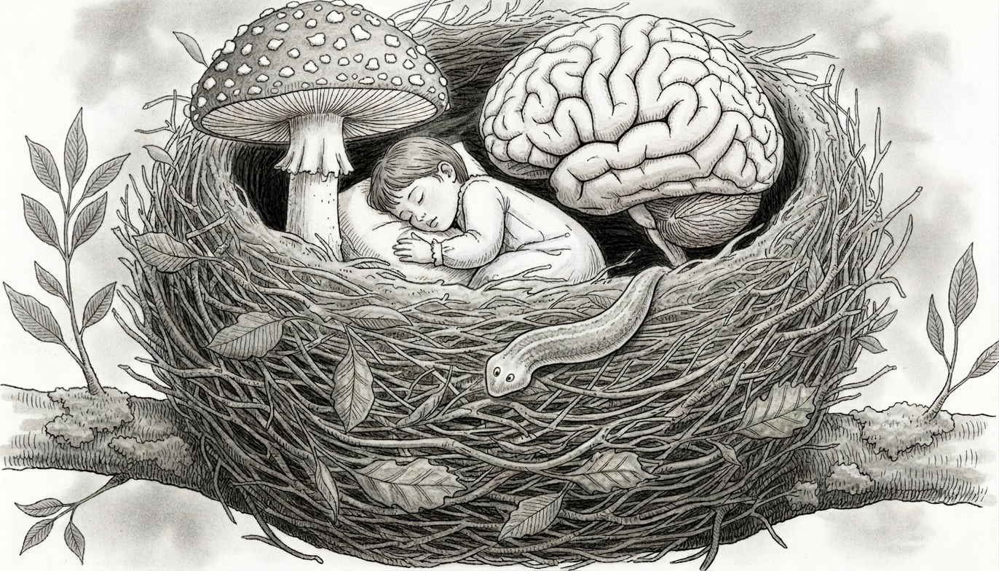

Psychedelic research
We investigate how psychedelic compounds reshape plasticity in animals, and perception and mood in humans through the analysis of first-person accounts.
Te Herenga Waka — Victoria University of Wellington · School of Psychological Sciences
How brains develop, adapt, and recover — across species and across scales.

NEST is the research group of Bart Ellenbroek and Jiun Youn at the School of Psychological Sciences, Te Herenga Waka—Victoria University of Wellington.
We study the developing and adapting brain from many angles — combining behavioural pharmacology, developmental neuroscience and a healthy appetite for unusual model systems, from planarian flatworms to human volunteers. The thread that ties our work together is plasticity: how nervous systems are shaped by genes, environment and experience, and how they can be nudged toward recovery. See us on the VUW pages →
Notices
Recent arrivals, papers, talks and milestones.
Replace this entry with your latest news — a new publication, a grant, a conference, or a welcome to a new group member. Keeping a few recent items here is the easiest way to make the site feel alive.
Each entry is a date and a short note. Newest at the top.
Lines of enquiry
Our work runs along several parallel lines, each chosen because it tells us something distinctive about how nervous systems change.
We investigate how psychedelic compounds reshape plasticity in animals, and perception and mood in humans through the analysis of first-person accounts.
We use the remarkable regenerative flatworm to ask how memory, learning and drugs form — and even rebuild — the nervous system.
Using available databases such as ABCD, we trace how early environmental factors shape adolescent brains and cognitive development.
We analyse how the use of generative AI shapes our behaviour and our cognitive and creative processes.
Side projects, collaborations and the curious questions that don't fit neatly anywhere else.
The group
NEST is led by Bart Ellenbroek and Jiun Youn, with a growing group of researchers and students.
Beyond the nest
NEST works with colleagues and institutions around the world. The people we build with, mapped.
● Wellington — home · ● collaborators (placeholders)
The brain is too complex to understand alone, so much of our work is done hand-in-hand with colleagues and labs elsewhere — in New Zealand and around the world.
See who we work with →The record
Our full and current list of papers lives on Google Scholar, where it updates itself — citations, co-authors and all.
View on Google Scholar →Find us
Interested in joining, collaborating, or just curious about the work? We'd love to hear from you.
Email the group →